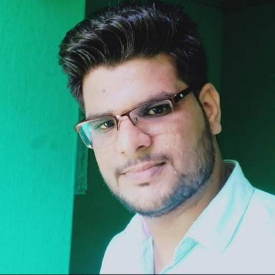

Medical Image Segmentation
Transformer and CNN hybrids, attention and multi-scale refinement for precise boundaries in skin and oral lesions, and 3D head-and-neck organs at risk.
Ph.D. Scholar · Electronics & Electrical Engineering · IIT Guwahati
I build deep learning models for medical image segmentation and classification, turning dermoscopic, oral and MRI scans into accurate, clinically useful predictions.

I am a Ph.D. scholar in the Department of Electronics and Electrical Engineering at the Indian Institute of Technology Guwahati, working under the supervision of Prof. M.K. Bhuyan. My research is on deep learning for medical imaging, with a focus on skin and oral cancer lesion segmentation, 3D head-and-neck organ-at-risk segmentation, fine-grained skin disease classification, and lightweight attention-based architectures built on Swin Transformers, ConvNeXt and wavelet features.
Beyond research, I like taking models all the way to something people can use. I have built end-to-end pipelines, from data preparation and model training in PyTorch and TensorFlow to web interfaces for real-time detection and visualization. I have also spent several years teaching machine learning, deep learning and computer vision to university and online learners.
I am open to research collaborations, internships and R&D roles in medical imaging, computer vision and applied AI.
Building accurate, efficient and interpretable models for medical images.
Transformer and CNN hybrids, attention and multi-scale refinement for precise boundaries in skin and oral lesions, and 3D head-and-neck organs at risk.
Metadata-guided and taxonomy-aware models for fine-grained skin disease classification, and multi-disorder diagnosis from brain MRI.
Lightweight networks and selective inference for resource-efficient, smartphone-based oral and skin lesion screening.
Paper Swin-DSA-Net accepted at the International Conference on Signal Processing and Communications (SPCOM 2026), IISc Bangalore.
Two papers, FusionNeXt and AIRNet, accepted at the 3rd IEEE Guwahati Subsection Conference (GCON 2026).
Four papers accepted at CMES 2027: LCS-Net, TaxoFusion, ResCBA-Net and a smartphone-based lesion-screening framework.
Two papers, WDCSeg-Net and MetaSwin-AGF, accepted at IEEE INDICON 2026.
RCGA-Net, for 3D head-and-neck organ-at-risk segmentation, accepted at CVIP 2026.
MSCRN, for skin lesion classification, accepted at RIC 2025.
Invited as Guest Faculty for Deep Learning in the PGD-AI course at C-DAC CINE.
Teaching Assistant for NPTEL Computer Vision and Machine Learning & Deep Learning courses.
For the up-to-date list, see my Google Scholar profile.
Swin-DSA-Net: A Dual-Stage Attention Guided Swin Transformer Network with Multi-Scale Refinement for Skin Lesion Segmentation
FusionNeXt: A ConvNeXt-Based Residual Fusion Network for Skin Lesion Segmentation
Segmentation of Oral and Skin Cancer Tissues using a Lightweight Agentic Iterative Refinement Network (AIRNet)
LCS-Net: A Lightweight Multi-Scale Cross-Stage Network for Efficient Skin Lesion Segmentation
TaxoFusion: Differentiable Sobel Attention and Taxonomy-Guided Self-Attention for Fine-Grained Skin Disease Classification
ResCBA-Net: Residual Channel-Block Attention Network for Skin Lesion Segmentation
History-Guided Selective Image Inference for Resource-Efficient Smartphone-Based Oral and Skin Lesion Screening
WDCSeg-Net: A Wavelet-DCT Guided Network with Multi-scale Atrous Feature Fusion for Medical Image Segmentation
MetaSwin-AGF: A Metadata-Guided Affine Gated Fusion Architecture for Skin Disease Classification
RCGA-Net: A Lightweight Recurrent Convolutional Gated-Attention Network for 3D Head-and-Neck OAR Segmentation
MSCRN: A Multi-Scale Contextual Refinement Network for Robust Skin Lesion Classification
Department of EEE, IIT Guwahati
Researching deep learning architectures for medical image segmentation and classification. Designed transformer and ConvNeXt-based networks for skin and oral cancer lesion segmentation, published at IEEE and international venues.
C-DAC CINE · PGD-AI Programme
Delivered lectures on deep learning to postgraduate diploma students in artificial intelligence.
IIT Guwahati · NPTEL · Coursera
Supported courses in Machine Learning, Computer Vision, Deep Learning and Data Science for on-campus and large online cohorts.
Mega Mind Coaching, Kannauj
Taught Physics to high-school and intermediate students, designed conceptual problem sets, ran lab demonstrations and prepared students for JEE and NEET.
Dakshinanchal Vidyut Vitran Nigam Ltd. (DVVNL), Kannauj
Studied power generation, transmission and distribution; observed substation operation, power-flow management and safety procedures.
Lecturing and teaching assistance across university, national online and professional programmes.
Deep learning model that segments skin lesions and classifies cancer type, with a web interface for real-time detection and visualisation.
Guide: Prof. P.K. Bora
A generalised deep learning framework that classifies multiple brain disorders from MRI scans using a single model.
Guide: Dr. D.R. Neog
Finger-motion recognition system that converts hand gestures drawn in the air into text using deep learning and computer vision.
Guide: Prof. M.K. Bhuyan
CNN-based model that detects in real time whether people in a video stream are wearing masks.
Guide: Prof. M.K. Bhuyan
Indian Institute of Technology Guwahati
Supervisor: Prof. M.K. Bhuyan
Government Engineering College, Kannauj, Uttar Pradesh
I'm happy to talk about research collaborations, internships, speaking or teaching, and R&D roles in medical imaging and computer vision.